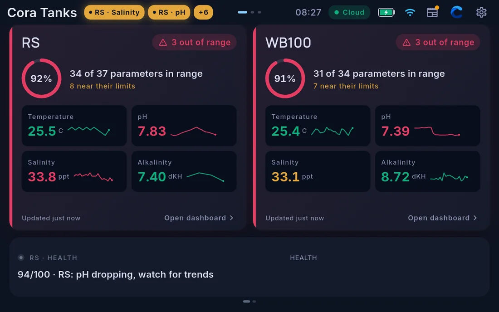

The Reef Room
If Cora Max shows more than one tank, the Reef Room is an overview of all of them at once. Open it with the grid icon at the far left of the top bar — on screen it is headed Cora Tanks.

The layout
A Cora Max shows up to four tanks, and the Reef Room gives each one an equal share of the screen:
| Tanks | Layout |
|---|---|
| 1 | No Reef Room — the screen opens straight onto that tank |
| 2 | Side by side |
| 3 | Three across |
| 4 | Two by two |
What a tile shows
Each tile summarises one tank:
- A percentage in range, with the counts behind it — how many parameters are in range, and how many are near their limits
- An out-of-range chip when something needs attention
- Four headline parameters with recent trends
- When it last updated, and a link into that tank's dashboard
Below the tiles, a ticker shows the current health headline for each tank in turn.
A tank needing attention is identifiable from across the room without touching the screen.
Moving between tanks
- Tap a tile, or Open dashboard, to go to that tank.
- Swipe sideways on the dashboard to move between tanks and back to the Reef Room.
- The grid icon returns to the Reef Room from any tank page. It is absent on the Reef Room itself, which is already where it goes.
Each tank keeps its own dashboard layout, so the screen changes completely as you move between them. See Editing the Cora Max dashboard.
Single-tank systems
With one tank paired, Cora Max opens straight onto that tank's dashboard and there is no Reef Room page.
Written for Cora Max 0.28.37 and Cora Mobile 0.5.55.
Still stuck? Email cora@coraiq.tech and we'll help.